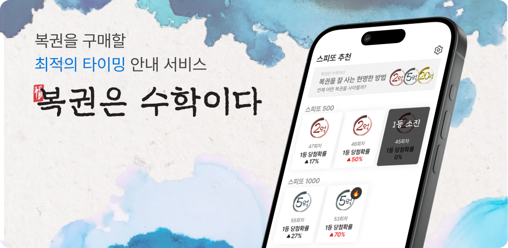

복권을 구매하는 가장 현명한 방법: 복권은 수학이다!

복권의 당첨 확률을 높이는 방법은 단 두 가지 뿐입니다.
더 산다.
잘 산다.
어떻게 해야 복권을 '잘' 살 수 있을까요?
로또: 실시간 판매량 조회를 통해 예상 당첨금이 높을 때 구매할 수 있도록 도와줍니다.
스피또: 출고율과 남아있는 1등 매수를 계산해서, 당첨확률이 높을 때 구매할 수 있도록 도와줍니다.
산신령 추천 기능: 작게는 10억부터 많게는 100억까지, 꿈꾸는 금액에 맞는 로또 조합을 추천해줍니다.
지원 및 연락처 정보
문제가 있을 경우, 이메일을 통해 연락주세요:
lottoismath@gmail.com